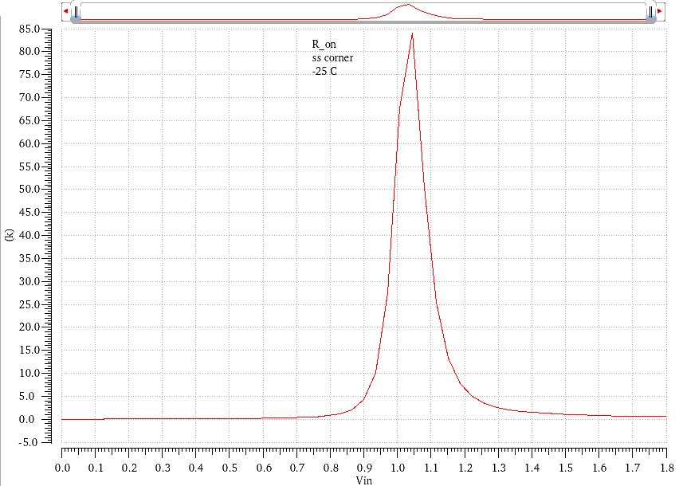
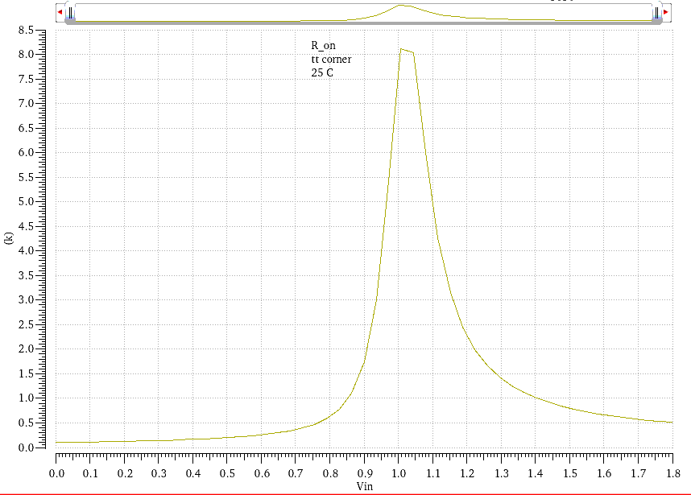
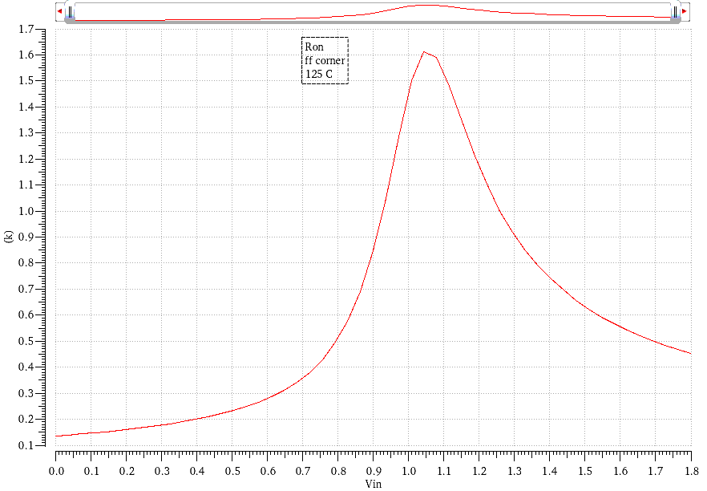
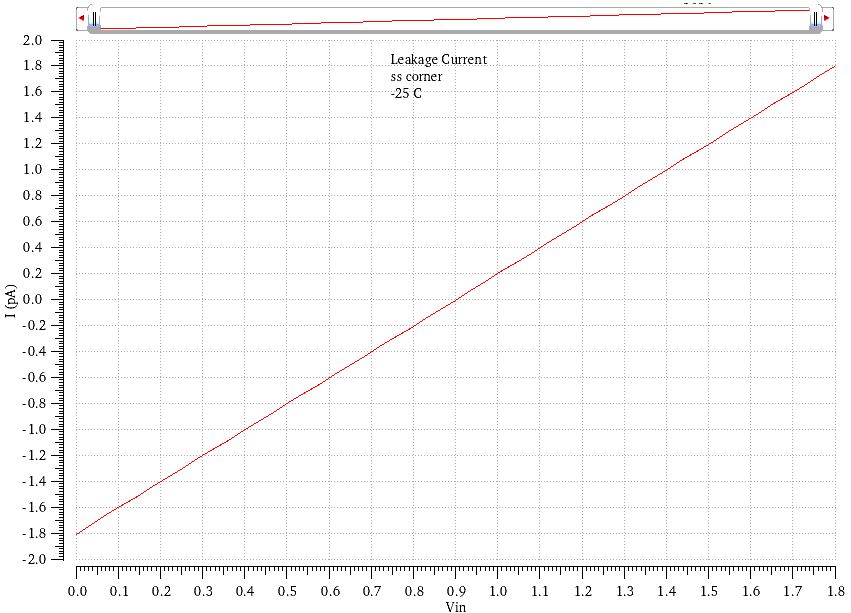
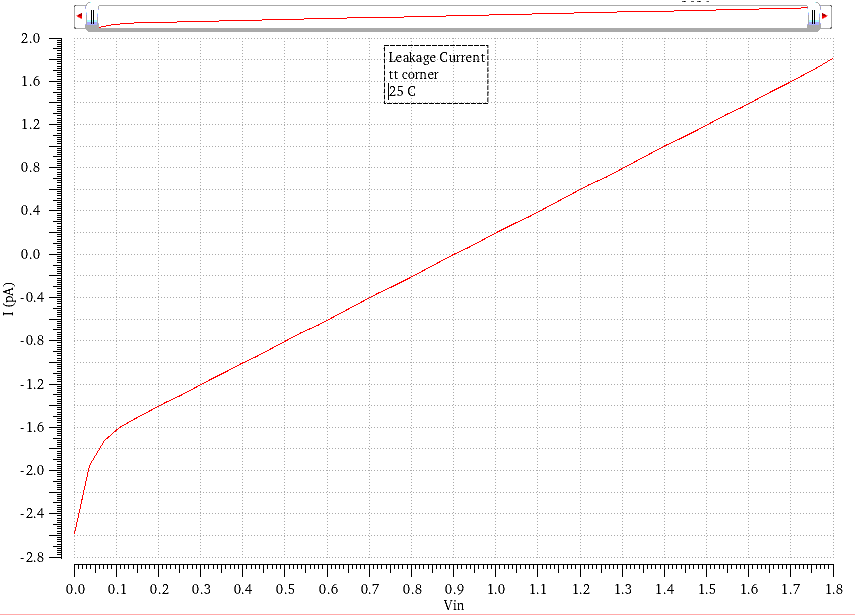
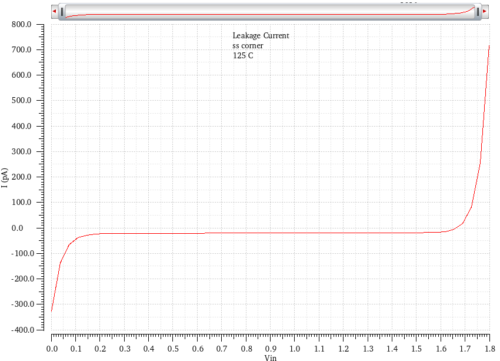

1. Introduction
The VCM switch / input selector switch is a critical component of the SAR ADC, responsible for accurately capturing the input signal and securing the sampled charge within the capacitor array. Each capacitor effectively interfaces with two switching elements: top-plate switches (the VCM switch) and bottom-plate switches (input selector switch / MUX switches).
Because the VCM switch is common to all top plates and the input selector switch is common to all bottom plates, they dominantly contribute to the total array's dynamic behavior compared to the MUX switches (available for each unit capacitor), which are distributed across multiple capacitor banks. Given that the positive and negative capacitor arrays are identical and feature two separate VCM switches / input selector switches, this analysis focuses on sizing a single VCM switch / input selector switch.
Description: Schematic with the switch placement is clearly visible.
2. Design Considerations
Sizing the VCM switch / input selector switch involves balancing several key performance metrics:
- CDAC Settling Time: Determines the maximum allowable on-resistance (\( R_{on} \)).
- Switch Non-linearities: The dependence of \( R_{on} \) on the input voltage (\( V_{in} \)) and capacitor voltage (\( V_{cap} \)).
- Holding Time & Charge Leakage: Ensuring the captured charge does not degrade significantly during the conversion phase.
- Charge Injection & Clock Feedthrough: Minimizing errors introduced during the switch turn-off event.
For the sizing of the VCM switch, extreme care should be taken regarding both the \( R_{on} \) and \( I_{leak} \) constraints, which impose opposite sizing requirements.
For the sizing of the input selector switch, the \( I_{leak} \) constraint can be relaxed since it is connected to the bottom plate, and strict enforcement of charge conservation on the bottom plate is not necessary. Therefore, we can take actions to minimize the \( R_{on} \). Care should be taken to minimize charge injection in both switches.
3. Array Capacitance
Based on previous capacitor array sizing calculations, the unit capacitor (\( C_u \)) implementation was chosen to be 4.5 μm × 4.5 μm, yielding approximately 43.92 fF.
For an 8-bit architecture, the total capacitance per array (\( C_{array} \)) is:
\[ C_{array} = 43.92 \text{ fF} \times 256 = 11.244 \text{ pF} \]
4. Settling Time and Maximum \( R_{on} \) Criteria
To analyze the switch-on state, the input switch is modeled as a static resistor (\( R_{on} \)).
Description: Modelling the input switch as a static resistances as series and parallel resistances/parallel capacitors.
4.1 Worst-Case Voltage Step
Assume the maximum voltage step across the capacitor array is
\(V_{0} = | V_{CM} - V_{in,p/n} | = | V_{CM} - (V_{CM} \pm V_{sig}) | = V_{sig}\), where
\( V_{in,p/n} \) represents the peak input voltage. Given that
\( V_{sig} = 0.5 V_{ref} = 0.9 \text{ V} \), this defines the worst-case
single-ended transition. Designing for this scenario guarantees
robust settling under all conditions. The voltage settling on the capacitor follows:
\[ V_{cap}(t) = V_{0} \left(1 - e^{-t/\tau}\right) \]
Where the time constant is \( \tau = R_{on} \cdot C_{array} \).
4.2 Settling Time Target
We allocate 0.5 of a clock period for the capacitor settling time. For a relaxed 100 kHz clock, \( T_{clk} = 10 \text{ \mu s} \) (providing a tighter margin than the standard 96 kHz clock). The available settling time (\( t_{settle} \)) is 5 μs.
4.3 Resolution Requirement
To ensure the sampled voltage represents the true input accurately, the settling error by the end of the sampling phase (\( t_{settle} \)) must be less than 0.5 LSB. The worst-case voltage error at time \( t \) is:
\[ V_{error}(t) = V_{0} e^{-t/\tau} \]
We require \( V_{error}(t_{settle}) < 0.5 \text{ LSB} \). Since \( 1 \text{ LSB} = \frac{V_{FS}}{2^N} \), \( 0.5 \text{ LSB} = \frac{V_{FS}}{2^{N+1}} \). (Note that \( V_{FS} \) cancels out, making the required \( R_{on} \) independent of the 1.8 V reference. \( V_{FS} \)= 2 \( V_{ref} \) and \( V_{0} = V_{ref} \)).
\begin{align*}
V_{0} e^{-t_{settle}/\tau} &< \frac{V_{FS}}{2^{N+1}} \\
0.5 V_{ref} e^{-t_{settle}/\tau} &< \frac{2 V_{ref}}{2^{N+1}} \\
e^{-t_{settle}/\tau} &< 2^{-(N-1)} \\
\frac{t_{settle}}{\tau} &> (N-1) \ln(2)
\end{align*}
\[ R_{on} \leq \frac{t_{settle}}{C_{array} \cdot (N-1) \cdot \ln(2)} \]
4.4 \( R_{on} \) Calculation
Substituting the physical design values (\( t_{settle} = 5 \times 10^{-6} \text{ s}, N = 8, C_{array} = 11.244 \times 10^{-12} \text{ F} \)):
\[ R_{on} \leq \frac{5 \times 10^{-6}}{11.244 \times 10^{-12} \times (8-1) \times 0.693} \approx \mathbf{91.7 \text{ k}\Omega} \]
(Note: While \( (N-1) \ln(2) \) is for differential case expecting 0.5 LSB settling for a worst-case full-scale step for each capacitor array. \( (N)\ln(2) \) gives a 0.5 LSB settling for differential case. We will not consider that for worst case scenario sizing(ss corner -25 C) but we will ensure that the typical corner will meet that requirements.)
Conclusion: The upper bound for the VCM switch / input selector switch on-resistance (\( R_{on} \)) is 91.7 kΩ. To account for PVT variations and switch non-linearities, the switch should be sized such that its peak resistance remains below this threshold across all operating conditions. This is a very loose constraint for the \( R_{on} \)
5. Capacitor Array Leakage Current Analysis
5.1 Circuit Modeling
To analyze the leakage current, we model the capacitor array (\(C_{array}\)) with VCM switches and combined bottom-plate switches. For a single side of the differential array, the simplified model is:
- \(V_{CM}\) is connected through an "off" resistance (\(r_{off}\)) to the top plate of the capacitor.
- The capacitor \(C_{array}\) is in series with another "off" resistance (\(r_{off}\)) connected to ground.
- \(V_{cap}\) represents the voltage across the capacitor array.
5.2 Leakage Analysis Equations
For the leakage analysis, we use the fundamental charge equation:
\[Q_{cap} = C_{array} \cdot V_{cap}\]
For a small time interval (\(\Delta t\)), the change in charge relates to the change in voltage as follows:
\[\frac{\Delta Q_{cap}}{\Delta t} = C_{array} \frac{\Delta V_{cap}}{\Delta t}\]
The term \(\frac{\Delta Q_{cap}}{\Delta t}\) represents the leakage current (\(I_{leakage}\)). Therefore:
\[I_{leakage} = C_{array} \frac{\Delta V_{cap}}{\Delta t}\]
5.3 Determining Worst-Case Parameters
To find the maximum allowable leakage current, we need the minimum allowable voltage drop (\(\Delta V_{min}\)) and the maximum hold time (\(\Delta t_{max}\)).
Calculating \(\Delta t_{max}\) (Hold Period):
- Design frequency (min): 96 kHz
- Clock Period (\(t\)): \( \frac{1}{96\text{ kHz}} \approx 10.42\text{ µs} \)
- Hold Periods: The conversion takes multiple clock cycles (8 clocks for a single SAR conversion). To account for noise shaping and a safety margin, we assume the hold state lasts for 11 out of 12 clock cycles per conversion.
- Calculation: \( 11 \times 10.42\text{ µs} = 114.62\text{ µs} \)
- Result: \(\Delta t_{max} \approx \mathbf{115\text{ µs}}\)
5.4 Maximum Allowable Voltage Drop
The maximum allowable voltage drop per array is defined as half of the Least Significant Bit (LSB) voltage to maintain conversion accuracy:
\[\Delta V = \frac{V_{LSB}}{2} = \frac{2V_{ref}}{2^{N+1}} = \frac{1.8}{2^8}\]
\(\Delta V_{max}\) calculation: \( \frac{1.8}{256} \approx \mathbf{7.03125\text{ mV}} \)
5.5 Maximum Leakage Current Calculation
Using the values derived above and a capacitor array value of \(11.244\text{ pF}\):
\[I_{leakage\_max} = 11.244\text{ pF} \times \frac{7.03125\text{ mV}}{115\text{ µs}}\]
\[I_{leakage\_max} = \mathbf{687.5\text{ pA}}\]
Design Limit:
To ensure stability and accuracy, the allowable leakage must be less than the calculated limit:
\[I_{leakage\_allowable} < I_{leakage\_limit} = \mathbf{685\text{ pA}}\]
5.6 Design Recommendations
By using this design limit, the following constraints are established for the system:
- Use capacitor arrays where \(C_{array} > 11.244\text{ pF}\) (larger capacitance reduces the voltage droop for a fixed leakage).
- Maintain a clock frequency \(f_{clk} > 96\text{ kHz}\) (higher frequencies shorten the hold time, reducing the impact of leakage).
6. VCM Switch FET Sizing Analysis
VCM FET sizing requires the consideration of both \( R_{on} \) and \( I_{leak} \). Therefore, we will design the VCM switch to strictly satisfy the above requirements, and design the input selector switch to complement \( R_{on} \) since its \( I_{leak} \) constraint can be relaxed.
6.1 Design Strategy and Goals
The sizing of the transmission gate (TG) necessitates a careful optimization between on-resistance (\( R_{on} \)) and leakage current (\( I_{leak} \)). To mitigate charge injection effects through first-order cancellation, the NMOS and PMOS devices are symmetrically sized (\( W_n = W_p \) and \( L_n = L_p \)).
- To minimize \( R_{on} \): Channel length (\( L \)) must be minimized while width (\( W \)) is maximized.
- To minimize \( I_{leak} \): Channel length (\( L \)) must be increased while width (\( W \)) is minimized.
6.2 Simulation Methodology and Test Environment
Robustness is verified by simulating the design across worst-case Process, Voltage, and Temperature (PVT) corners:
- Worst-Case \( R_{on} \): Evaluated at the SS (Slow-Slow) process corner at -25°C, where carrier mobility is lowest.
- Worst-Case \( I_{leak} \): Evaluated at the FF (Fast-Fast) process corner at 125°C, where subthreshold and junction leakage currents peak.
Description: Cadence schematic illustrating the transmission gate setup with the capacitor array load and the DC/Parametric simulation sources.
Testbench Configuration:
- \( R_{on} \) Characterization: A 1 mV differential is forced across the TG input and output, and the resulting current is measured to calculate resistance.
- \( I_{leak} \) Characterization: The TG output is biased at the common-mode voltage (\( V_{CM} \)), mirroring the SAR logic's tendency to drive the \( C_{array} \) top-plate toward \( V_{CM} \). The input voltage is swept to evaluate leakage.
Simulation Strategy:
Initial parametric sweeps of \( W \) and \( V_{in} \) across discrete lengths (150 nm to 220 nm) revealed edge-case vulnerabilities:
- \( L = 150 \text{ nm} \): Displayed excessive \( I_{leak} \) at the upper limits of the input voltage range.
- \( L = 220 \text{ nm} \): Exhibited inadequate \( R_{on} \) performance near the mid-rail input voltages.
Consequently, the methodology was refined: \( V_{in} \) was fixed at the previously identified worst-case potentials (e.g., mid-rail for maximum \( R_{on} \), and 0.05V / 1.75V for maximum \( I_{leak} \), suppressing the absolute extremes to reflect realistic operational limits). \( W \) and \( L \) were then systematically swept to identify the optimal design boundary.
6.3 Parametric Sweep Results
The following tables summarize the design boundary conditions required to satisfy the established \( R_{on} \) and \( I_{leak} \) limits. Note that these values are approximations utilized to qualitatively guide the dimension selection process.
Table 1: \( R_{on} \) Boundary Constraints (SS Corner, -25°C)
Determines the maximum allowable \( L \) for a given \( W \) to satisfy the \( R_{on} \) upper bound.
| Width (W) |
Length (L) Limit |
Status |
| 3.0 μm | < 150 nm | ✘ (Fail) |
| 3.5 μm | < 154 nm | ✔ (Pass) |
| 4.0 μm | < 159 nm | ✔ (Pass) |
| 4.5 μm | < 164 nm | ✔ (Pass) |
| 5.0 μm | < 168 nm | ✔ (Pass) |
| 5.5 μm | < 176 nm | ✔ (Pass) |
| 6.0 μm | < 182 nm | ✔ (Pass) |
| 6.5 μm | < 190 nm | ✔ (Pass) |
| 7.0 μm | < 198 nm | ✔ (Pass) |
| 7.5 μm | < 205 nm | ✔ (Pass) |
Table 2: \( I_{leak} \) Boundary Constraints (FF Corner, 125°C)
Determines the minimum required \( L \) for a given \( W \) to strictly enforce the \( I_{leak} \) upper bound.
| Width (W) |
Length (L) Limit |
Status |
| 3.0 μm | > 224 nm | ✔ (Pass) |
| 3.5 μm | > 222 nm | ✔ (Pass) |
| 4.0 μm | > 221 nm | ✔ (Pass) |
| 4.5 μm | > 220 nm | ✔ (Pass) |
| 5.0 μm | > 220 nm | ✔ (Pass) |
| 5.5 μm | > 215.5 nm | ✔ (Pass) |
| 6.0 μm | > 211 nm | ✔ (Pass) |
| 6.5 μm | > 207.5 nm | ✔ (Pass) |
| 7.0 μm | > 204 nm | ✔ (Pass) |
| 7.5 μm | > 205 nm | ✔ (Pass) |
Note: Extreme rail conditions (\( V_{in} \approx 0\text{V} \) and \( 1.8\text{V} \)) induce complex leakage mechanisms that fall outside the typical tracking envelope and were excluded from this specific boundary selection phase.
6.4 Proposed Device Sizes
Evaluating the parametric sweep results to identify the minimum device footprint that simultaneously satisfies both the \( R_{on} \) and \( I_{leak} \) constraints across all worst-case corners yields the following optimal dimensions:
- \( W_n = W_p = 7.5 \text{ μm} \)
- \( L_n = L_p = 205 \text{ nm} \)
6.5 Final Simulation Verification
Deploying the proposed physical dimensions, the final verification simulations confirm the design viability:
- On-Resistance (\( R_{on} \)): Evaluated under the SS corner at -25°C, the constraint \( R_{on} < 71.2 \text{ k}\Omega \) is strictly satisfied across the dominant input range, demonstrating significant headroom compared to the initial boundaries.



Description: Plots illustrating the \( R_{on} \) curves across the 0V to 1.8V input span, capturing the peak resistance in the mid-rail region across different corners.
- Leakage Current (\( I_{leak} \)): Evaluated under the FF corner at 125°C, the constraint \( I_{leak} < 170 \text{ pA} \) is strictly satisfied across the entire functional input range (excluding extreme rails).



Description: Plots illustrating leakage current versus input voltage, featuring a horizontal threshold marker at the 170 pA design limit across different corners.
6.6 Design Rounding Considerations
If layout constraints necessitate rounding the channel length (\( L \)) to a standard grid, the dimensions can be adjusted to 200 nm or 210 nm:
- Rounding to \( L = 200 \text{ nm} \): Increases the leakage current (\( I_{leak} \)) significantly at the input voltage extremes.
- Rounding to \( L = 210 \text{ nm} \): Increases the peak on-resistance (\( R_{on} \)), particularly in the mid-rail region.
Recommendation: It is recommended to round up to \( L = 210 \text{ nm} \) while slightly increasing the device width (e.g., \( W = 7.6 \text{ μm} \)). The reasoning is that the rate at which \( R_{on} \) degrades is relatively lower compared to the exponential increase in \( I_{leak} \) at shorter channel lengths. Furthermore, the established \( R_{on} \) upper bound (71.3 kΩ) already contains significant redundancy, easily absorbing the minor resistance penalty introduced by this adjustment.
7. Charge Injection and Switch Non-Linearities
7.1 Charge Injection Mitigation
To minimize the charge injection from the gate capacitance into the capacitor array (\( C_{array} \)) during the turn-off event, dummy switching devices are employed. Specifically, two dummy NMOS and two dummy PMOS devices are added alongside the active transmission gate devices. These dummy devices are sized with half the width (\( W/2 \)) of the active devices and are driven by complementary clock signals to absorb the injected channel charge.
7.2 Switch Non-Linearities
To address switch non-linearities (such as the variation of \( R_{on} \) with the input voltage), a bootstrapped switch architecture is often considered. However, in this design, a bootstrapped switch will not be utilized. The primary reasons are the inherent limitations of operating with low-voltage devices, alongside the significant circuit complexity and area overhead it would introduce. The symmetrically sized transmission gate, coupled with the conservatively established \( R_{on} \) margins, provides sufficient linearity to satisfy the target 8-bit resolution.
8. Input Selector Sizing
8.1 Overview
The Input Selector is a multiplexer that selects a voltage from either \(V_{in}\) (differential \(V_{inp}/V_{inn}\)) or \(V_{ref}\) and feeds it to the capacitor array (unit capacitor muxes). This switching occurs during the sampling and conversion phases of the ADC.
8.2 Design Goals and Constraints
- Primary Goal: Minimize the On-Resistance (\(R_{on}\)) to ensure fast settling during sampling.
- Care should be taken for: Minimize the On-Resistance (\(R_{on}\)) to ensure fast settling during conversion when CDAC switches are toggled.
- Constraints: Area and charge injection must be managed.
Note on Leakage: Leakage currents are not a primary concern for accuracy at this stage. While they can impact power, they are overlooked in this initial design cycle.
Note on CDAC Switching:When the CDAC capacitors are toggled significant current is drawn through the switch which can cause voltage drops. The effect of this is prominant in MSB capacitor switching and the IR drop forces the topplate voltage to drop below VSS which adversly effect top plate charge leakage. So care should be taken to minimize Ron as much as possible to minimize the voltage drop and ensure the top plate voltage does not drop below VSS in MSB capacitor switching.
8.3 Device Sizing Selection
Initial simulations used the sizing from the Common-Mode (\(V_{CM}\)) switch. However, simulations under worst-case conditions (SS corner, -25°C) showed that the \(R_{on}\) was too high.
To address this, the width was increased while the length was reduced to the process minimum to maximize drive strength and minimize resistance such that the gate areas of the switches are equal.(Not a strict requirement)
Proposed Design Device Dimensions:
- \(W_p = W_n = 11\text{ µm}\) (aligned with \(V_{CM}\) switch gate area with minimum length)
- \(L_p = L_n = 150\text{ nm}\) (Minimum Length)
Description: Schematic showing the two transmission gates (for \(V_{in}\) and \(V_{ref}\)) connected to a common output node.
9. Capacitor Array Unit Cell Mux Sizing
9.1 Settling Considerations
For the unit capacitor cell, the sizing is governed strictly by \(R_{on}\) requirements. Since the bottom plate is always connected to an external supply during these phases, leakage (\(I_{leak}\)) is not a critical consideration. The calculation follows the settling time requirement for an \(N\)-bit converter.
9.2 Resistance Calculations
The required \(R_{on}\) is derived from the settling time (\(\tau\)) needed to reach the required accuracy:
\[R_{on} \le \frac{t_{settle}}{C_{unit} \cdot (N-1) \cdot \ln(2)}\]
Using the following parameters (with slight variations between simulated and calculated capacitance):
- \(t_{settle} = 5\text{ µs}\)
- \(C_{unit} \approx 48.45\text{ fF}\)
- \(N = 8\) bits
\[R_{on} \le \frac{5 \times 10^{-6}}{48.45 \times 10^{-15} \cdot (8-1) \cdot 0.693} \approx 23.72\text{ M}\Omega\]
Description: A diagram showing the unit capacitor with its associated NMOS/PMOS switches for selecting \(V_{in}/V_{ref}\) or \(GND\).
9.3 Effective Resistance and Implementation
When considering the parallel operation of the array, the effective resistance limit for the combined muxes is:
\[R_{on,eff,mux} \le \frac{23.72\text{ M}\Omega}{2^8} \approx 92.6\text{ k}\Omega\]
This resistance is the total resistance ( total mux resistance in series with the \(V_{CM}\) switch and the Input Select \(R_{on}\)). This implies that the individual unit mux switches should have extremely low resistances to not dominate the RC constant(The previusly calculated \(R_{on}\) upper limit is lower than this value).
If we assume the total effective resistance of all switches is roughly \(1\text{ k}\Omega\), then the \(R_{on}\) for a single unit mux switch would be:
\[R_{on} = 1\text{ k}\Omega \times 256 = 256\text{ k}\Omega\]
Description: A plot showing the parametric sweep with minimum length and varying width
Conclusion: This target is easily achievable using standard transistors with relatively small gate widths. According to simulations, a width (\(W\)) greater than 1μm with the minimum length (\(L = 150\text{ nm}\)) is sufficient to meet the \(R_{on}\) target. The final dimensions can be optimized based on layout area availability, allowing for a compact layout of the capacitor array.